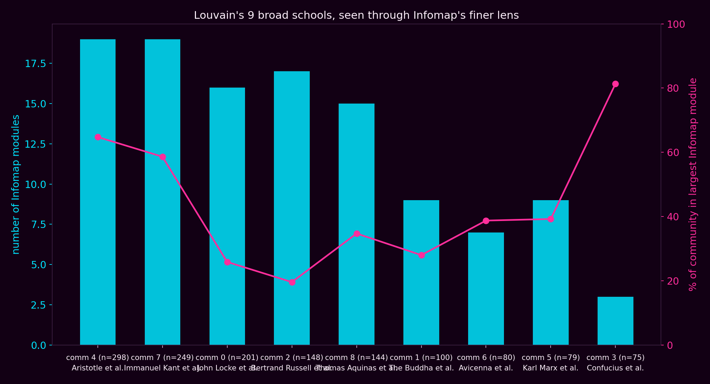
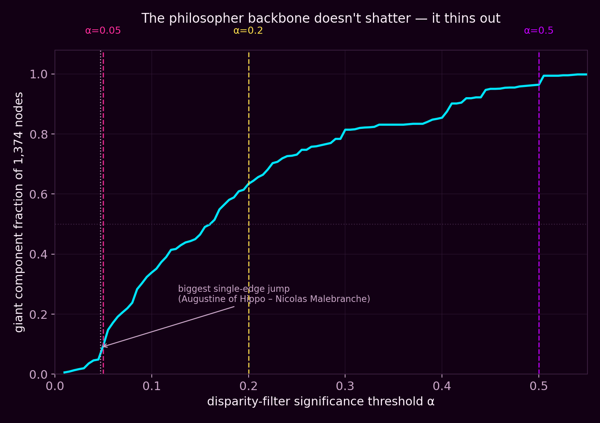
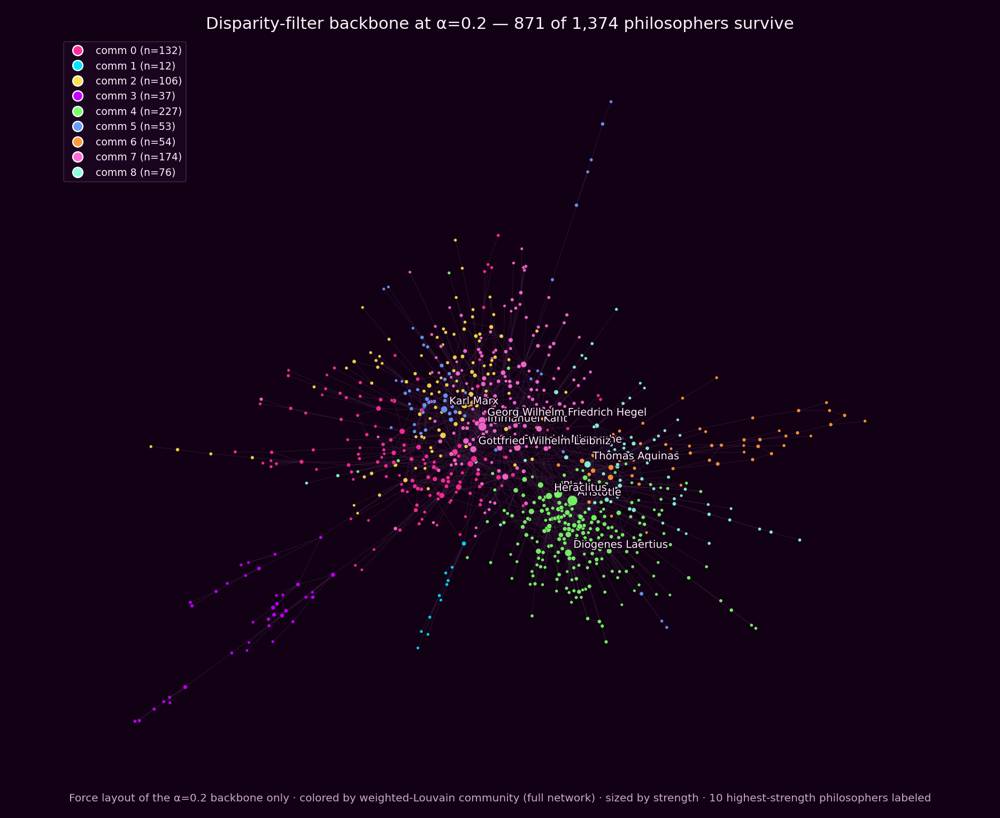

What we asked
This week we finally got to pick our own network, so we retired the Marvel hyperlink graph (RIP, three good weeks) for the course's philosophers dataset: 1,444 philosophers and philosophical traditions from Wikipedia, connected by 11,135 directed, weighted hyperlink edges. We symmetrized the weights into a single undirected graph and kept its giant component — 1,374 philosophers, 9,139 weighted edges, total edge weight 15,758 — as the network for everything below. With a fresh network and free rein, we chased all three of this week's "go nuts" openers at once: does weighting edges change who ends up in whose school, does a completely different community-detection philosophy (Infomap) agree with modularity-based Louvain, and does the network have a real backbone, or does it just fall apart once you start trimming weak links?
Tool 1 — Weighted vs. unweighted: does counting matter?
We ran Louvain community detection twice on the same 1,374 philosophers — once respecting edge weight (how often two philosophers' Wikipedia pages actually link to each other) and once pretending every link counts the same — five random seeds each, to make sure we weren't reading noise into a single run. Weighted Louvain settled on 7–9 communities with modularity Q ≈ 0.555 (range 0.546–0.564); unweighted Louvain settled on 9–10 communities with a noticeably lower Q ≈ 0.505. Counting actually helps the partition, which makes sense — two philosophers linked once in passing and two linked from a dozen different angles shouldn't count the same.
More interesting than the modularity gap is how much the membership changes: agreement between the weighted and unweighted partitions is only NMI = 0.637, and 348 of 1,374 philosophers (25.3%) land in a different community than their weighted "home" community would predict. These movers skew slightly peripheral (mean degree 11.8 vs. 13.8 for non-movers), but a few genuinely famous names switch schools depending on whether you count. René Descartes and Leibniz drift out of the Kant/Hegel/Nietzsche "German rationalism" cluster and into the Locke/Hume/Newton "British empiricism" cluster once weights are ignored; Karl Marx drifts from his own Marx/Tolstoy/Lenin/Engels cluster toward that same empiricism cluster; and Thomas Hobbes moves too. Unweighted Louvain, in other words, is more easily swayed by a handful of incidental links than by the dense back-and-forth citation pattern that actually defines a school of thought.
Tool 2 — Louvain vs. Infomap: one philosopher's community is another algorithm's nine
Louvain optimizes modularity and gives you broad "schools"; Infomap optimizes the map equation and tends to find much finer flow structure. Run on the same weighted network, Infomap found 70 modules against weighted Louvain's 9 — roughly eight Infomap modules for every one Louvain community, on average. Agreement is moderate either way (NMI = 0.630 against weighted Louvain, 0.602 against unweighted), which tells you the two algorithms aren't contradicting each other so much as answering different questions at different resolutions.
What's genuinely interesting is that the fragmentation isn't even. Some of Louvain's big schools hold together under Infomap's finer lens; others shatter. The Aristotle/Plato/Socrates cluster (n=298) splinters into 19 Infomap modules with only 64.8% staying together in the largest one, and the Kant/Hegel/Descartes/Nietzsche/Leibniz cluster (n=249) does almost the same — 19 modules, 58.6% retained. The Locke/Hume/Newton/Rousseau/ Voltaire empiricists (n=201) fragment hardest of all: 16 modules, and only 25.9% of the community stays in Infomap's largest piece for it. But the Confucius/Zhu Xi/Mao Zedong/Laozi/Mencius cluster (n=75) is the outlier in the other direction — Infomap only cracks it into 3 modules, with 81.3% of it staying in a single module. By Infomap's much stricter standard, Chinese philosophy is the one Louvain community in this dataset that's actually cohesive rather than a modularity-convenient bundle of smaller, more flow-isolated sub-traditions.

Tool 3 — Backbone: does the network shatter, or just thin out?
We implemented the disparity filter (Serrano, Boguna & Vespignani, 2009) from scratch: for every edge, keep it only if it's statistically significant relative to at least one of its endpoints' total edge weight, at a chosen significance level α. Lower α means a stricter backbone with only the edges that really matter to a given philosopher's overall "weight budget" survive. We scanned α from 0.01 to 0.55 and tracked what fraction of the network stays in one giant, connected piece.
The headline finding is that this backbone doesn't have a dramatic breaking point — it thins out gradually. At the strictest threshold we tried (α=0.05) only 9.5% of philosophers are still connected in the giant piece; loosen it to α=0.2 and that climbs to 63.4%; by α=0.5 it's 96.4%, nearly the whole network. There's no cliff, no single α where everything suddenly falls apart or suddenly reconnects — the significance of a philosopher's links to the rest of the network is spread out fairly smoothly rather than concentrated at one critical threshold.

That said, edges are not all equally important to keep. We tracked, edge by edge in increasing-α order, which single addition merged the two biggest existing clusters into the biggest jump anywhere in the whole scan. That edge is Augustine of Hippo – Nicolas Malebranche (edge weight 5, significant at α≈0.047): it merges a 75-philosopher cluster with a 47-philosopher cluster into one 122-strong piece in a single stroke — a fittingly on-theme finding, since Malebranche's whole philosophical project was explicitly built on reworking Augustinian ideas through a Cartesian lens.

| Finding | Weighted | Unweighted / other |
|---|---|---|
| Louvain modularity (5 seeds) | Q ≈ 0.555, 7–9 comms | Q ≈ 0.505, 9–10 comms |
| NMI, weighted vs. unweighted Louvain | 0.637 (348 / 1,374 movers, 25.3%) | |
| Infomap modules vs. weighted Louvain communities | 70 modules | 9 communities |
| NMI, Infomap vs. weighted / unweighted Louvain | 0.630 | 0.602 |
| Backbone giant-component fraction at α=0.05 / 0.2 / 0.5 | 9.5% / 63.4% / 96.4% | |
What surprised us
All three tools converge on the same underlying idea: the strength of a connection carries real information that a binary "linked or not" view throws away, and it takes deliberately different methods to see how much. Weighting edges properly reshuffles a quarter of the network's community membership and pulls out famous, non-trivial swaps like Descartes and Marx moving schools depending on whether repetition counts. Switching from modularity to the map equation reveals that some "schools" (Aristotle's, Kant's) are really loose federations of many smaller flow-communities, while others (Confucius's) are genuinely, tightly cohesive at a much finer resolution too. And the backbone doesn't have a single dramatic collapse point at all — it thins gradually, with importance spread across the network rather than resting on one bottleneck — except for one edge, appropriately between two philosophers whose ideas were themselves directly built on each other, which does more single-handed structural work than any other connection in the graph.